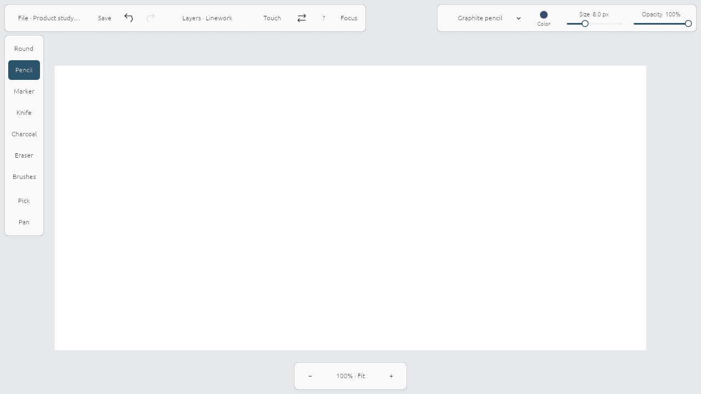

Sketchbook: visible favorites
A small edge palette gives brushes a stable home; the full library is a separate destination. Official interface reference.
SKETCHPAD / WORKSPACE STUDY / 12 SEPTEMBER 2026
A visible working set inspired by Sketchbook, with Procreate’s persistent brush controls and Concepts’ separation of drawing and precision tools. These are actual native UI renders on Atlas, using fixture document state.

A small edge palette gives brushes a stable home; the full library is a separate destination. Official interface reference.
Size and opacity stay available during drawing, alongside direct brush, color and layer access. Handbook reference.
Tool slots and current properties are grouped; precision tools get their own section. Workspace reference.
The keyboard gestures remain: Shift-drag size, O-drag opacity, Space-pan and Shift+Space-zoom. On-screen controls cover the same drawing operations. Selection/transforms, perspective guides and customizable favorites are follow-up feature work.